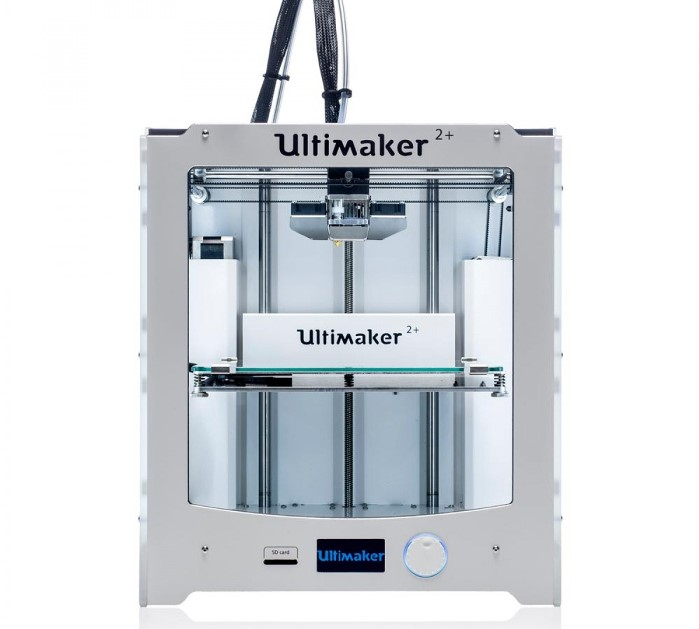

Ultimaker 2+
The ultimaker 2+ is a reliable and accurate FFF (Fused filament fabrication) printer. It features a moderately large build volume and is a go to tool for almost any print.
Spec Summary
The following table sums up the specifications relevant for the use of the ultimaker in our workspace.
| Build volume | 223 x 220 x 205 mm |
| Print technology | Fused filament fabrication |
| Compatible filament diameter | 2.85mm |
| Layer resolution | 200-20 micron |
| XYZ resolution | 12.5, 12.5, 5 micron |
| Print head | Single extrusion with dual cooling fans |
Useful Resources
User Manual
This manual contains all the necessary information to start working with the ultimaker printers in our makerspace.
Cura profiles
This file contains profiles for the slicer software Cura.